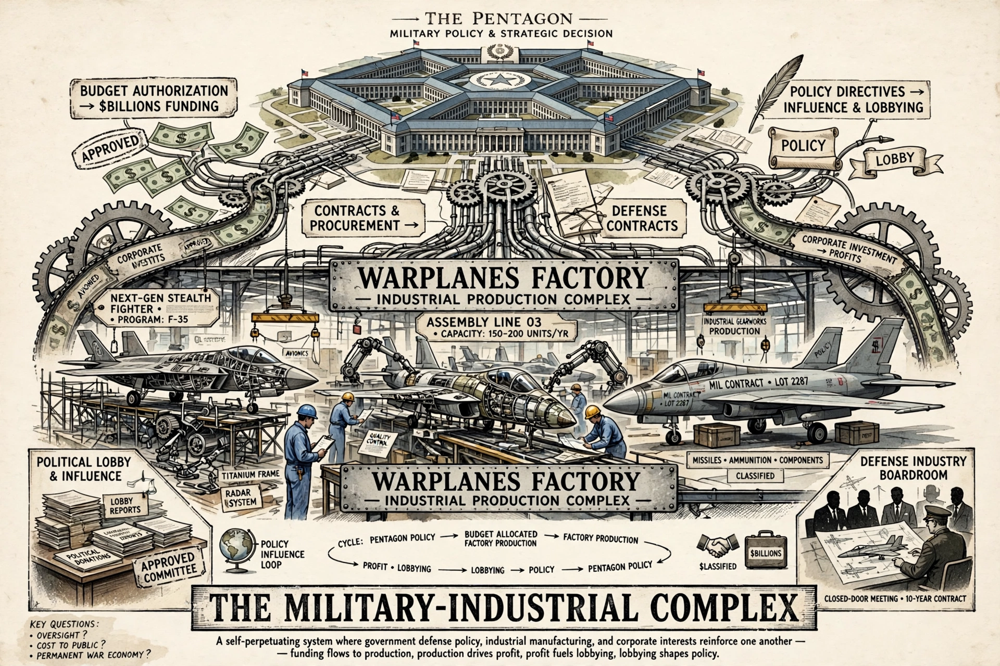

The military–industrial complex describes the relationship between a country's armed forces, its defence industry and political establishment, in which each benefits from military spending and policy influence. The term was popularised by US President Dwight D. Eisenhower in his farewell address of 17 January 1961, warning that the conjunction of a large military establishment and arms industry could exert "unwarranted influence" over government.

| Coined / popularised | Dwight D. Eisenhower, 1961 |
|---|---|
| Related concepts | Iron triangle, revolving door, defence contracting |
Eisenhower, a former five-star general, cautioned that "we must guard against the acquisition of unwarranted influence, whether sought or unsought, by the military–industrial complex" and warned of a scientific-technological elite shaping public policy. Drafts reportedly used "military–industrial–congressional complex" before the last term was dropped.
Analysts describe an iron triangle of defence contractors (such as Lockheed Martin, Boeing and RTX), the Pentagon and congressional committees: contractors fund lobbying and campaigns, jobs are spread across districts, and retired officers join corporate boards — the revolving door. Critics link the complex to inflated budgets, cost-overrun weapons programmes and interventionist foreign policy; defenders argue a strong industrial base is essential to national security and technological innovation (spinoffs include the internet and GPS).
The phrase has been extended to analogues such as the prison–industrial complex, pharmaceutical–industrial complex and military–industrial–media complex, and to other states including Russia, China and the Soviet Union's defence sector.